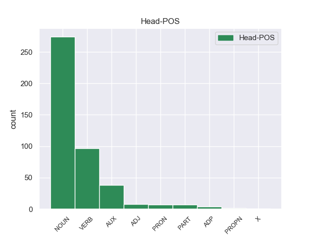

Distribution of features within this leaf

Agreement Rules sorted by frequency.
- When the dependent token is the subject(subj) of the head token, and the dependent token is PRON.
1 Stag _ ADJ _ Mood=Ind|Number=Sing|Person=1|Tense=Pres|VerbForm=Fin 0 _ _ _
2 eo is PRON _ Case=Abl|Gender=Masc|Number=Sing|Person=3|PronType=Prs 1 subj _ _
3 e _ _ _ _ 0 _ _ _
4 anv _ _ _ _ 0 _ _ _
5 ouzh _ _ _ _ 0 _ _ _
6 hini _ _ _ _ 0 _ _ _
7 sent _ _ _ _ 0 _ _ _
8 all _ _ _ _ 0 _ _ _
9 e _ _ _ _ 0 _ _ _
10 amzer _ _ _ _ 0 _ _ _
11 : _ _ _ _ 0 _ _ _
12 Kaourintin _ _ _ _ 0 _ _ _
13 , _ _ _ _ 0 _ _ _
14 kentañ _ _ _ _ 0 _ _ _
15 eskob _ _ _ _ 0 _ _ _
16 Kemper _ _ _ _ 0 _ _ _
17 , _ _ _ _ 0 _ _ _
18 Maodez _ _ _ _ 0 _ _ _
19 Gwennole _ _ _ _ 0 _ _ _
20 , _ _ _ _ 0 _ _ _
21 saver _ _ _ _ 0 _ _ _
22 abati _ _ _ _ 0 _ _ _
23 Landevenneg _ _ _ _ 0 _ _ _
24 . _ _ _ _ 0 _ _ _
1 Kevatal kevatal NOUN _ Number=Sing 0 _ _ _
2 eo is PRON _ Case=Abl|Gender=Masc|Number=Sing|Person=3|PronType=Prs 1 mod _ _
3 d'al _ _ _ _ 0 _ _ _
4 lizherenn _ _ _ _ 0 _ _ _
5 ヂ _ _ _ _ 0 _ _ _
6 hervez _ _ _ _ 0 _ _ _
7 ar _ _ _ _ 0 _ _ _
8 silabenneg _ _ _ _ 0 _ _ _
9 japanek _ _ _ _ 0 _ _ _
10 all _ _ _ _ 0 _ _ _
11 anvet _ _ _ _ 0 _ _ _
12 katakana _ _ _ _ 0 _ _ _
13 . _ _ _ _ 0 _ _ _
1 Tiez tiez VERB _ Number=Sing|Person=2 0 _ _ _
2 - _ _ _ _ 0 _ _ _
3 te te PRON _ Number=Sing|Person=2 1 comp:obj _ _
4 a _ _ _ _ 0 _ _ _
5 zo _ _ _ _ 0 _ _ _
6 niverus _ _ _ _ 0 _ _ _
7 e _ _ _ _ 0 _ _ _
8 Beijing _ _ _ _ 0 _ _ _
9 hag _ _ _ _ 0 _ _ _
10 an _ _ _ _ 0 _ _ _
11 te _ _ _ _ 0 _ _ _
12 a _ _ _ _ 0 _ _ _
13 zo _ _ _ _ 0 _ _ _
14 ur _ _ _ _ 0 _ _ _
15 perzh _ _ _ _ 0 _ _ _
16 pouezhus _ _ _ _ 0 _ _ _
17 eus _ _ _ _ 0 _ _ _
18 ar _ _ _ _ 0 _ _ _
19 sevenadur _ _ _ _ 0 _ _ _
20 lec'hiel _ _ _ _ 0 _ _ _
21 . _ _ _ _ 0 _ _ _
1 Skiant _ _ _ _ 0 _ _ _
2 ar _ _ _ _ 0 _ _ _
3 plant _ _ _ _ 0 _ _ _
4 pe _ _ _ _ 0 _ _ _
5 ar _ _ _ _ 0 _ _ _
6 struzh struzh NOUN _ Number=Sing 0 _ _ _
7 eo is PRON _ Case=Abl|Gender=Masc|Number=Sing|Person=3|PronType=Prs 6 mod@poss _ _
8 ar _ _ _ _ 0 _ _ _
9 botanik _ _ _ _ 0 _ _ _
10 ( _ _ _ _ 0 _ _ _
11 diwar _ _ _ _ 0 _ _ _
12 ar _ _ _ _ 0 _ _ _
13 gresianeg _ _ _ _ 0 _ _ _
14 βοτάνη _ _ _ _ 0 _ _ _
15 = _ _ _ _ 0 _ _ _
16 geotenn _ _ _ _ 0 _ _ _
17 , _ _ _ _ 0 _ _ _
18 plantenn _ _ _ _ 0 _ _ _
19 ) _ _ _ _ 0 _ _ _
20 . _ _ _ _ 0 _ _ _
1 He he AUX _ Number=Sing|Person=2 0 _ _ _
2 dilhad _ _ _ _ 0 _ _ _
3 zo _ _ _ _ 0 _ _ _
4 goloet _ _ _ _ 0 _ _ _
5 a _ _ _ _ 0 _ _ _
6 stered _ _ _ _ 0 _ _ _
7 , _ _ _ _ 0 _ _ _
8 ha _ _ _ _ 0 _ _ _
9 dalc'hmat _ _ _ _ 0 _ _ _
10 e _ _ _ _ 0 _ _ _
11 vez _ _ _ _ 0 _ _ _
12 troet _ _ _ _ 0 _ _ _
13 he he PRON _ Gender=Masc|Number=Sing|Person=3|PronType=Prs 1 conj _ _
14 selled _ _ _ _ 0 _ _ _
15 etrezek _ _ _ _ 0 _ _ _
16 an _ _ _ _ 0 _ _ _
17 neñv _ _ _ _ 0 _ _ _
18 . _ _ _ _ 0 _ _ _
1 Evidon _ _ _ _ 0 _ _ _
2 - _ _ _ _ 0 _ _ _
3 me me PRON _ Number=Sing|Person=1 5 unk@expl _ _
4 ez _ _ _ _ 0 _ _ _
5 eo is AUX _ Case=Abl|Gender=Masc|Number=Sing|Person=3|PronType=Prs 0 _ _ _
6 ur _ _ _ _ 0 _ _ _
7 c'hendeuz _ _ _ _ 0 _ _ _
8 aes _ _ _ _ 0 _ _ _
9 da _ _ _ _ 0 _ _ _
10 zegemer _ _ _ _ 0 _ _ _
11 eus _ _ _ _ 0 _ _ _
12 hengoun _ _ _ _ 0 _ _ _
13 ar _ _ _ _ 0 _ _ _
14 banniel _ _ _ _ 0 _ _ _
15 erminiget _ _ _ _ 0 _ _ _
16 plaen _ _ _ _ 0 _ _ _
17 hag _ _ _ _ 0 _ _ _
18 eus _ _ _ _ 0 _ _ _
19 ur _ _ _ _ 0 _ _ _
20 skeudenn _ _ _ _ 0 _ _ _
21 eus _ _ _ _ 0 _ _ _
22 liested _ _ _ _ 0 _ _ _
23 Breizh _ _ _ _ 0 _ _ _
24 " _ _ _ _ 0 _ _ _
25 . _ _ _ _ 0 _ _ _
1 David _ _ _ _ 0 _ _ _
2 a _ _ _ _ 0 _ _ _
3 zo _ _ _ _ 0 _ _ _
4 an _ _ _ _ 0 _ _ _
5 eil _ _ _ _ 0 _ _ _
6 maread _ _ _ _ 0 _ _ _
7 douarouriel douarouriel NOUN _ Case=NomAcc|Gender=Masc|Number=Sing 0 _ _ _
8 eus eus PRON _ Number=Sing|Person=2 7 udep@prep _ _
9 ar _ _ _ _ 0 _ _ _
10 c'hambrian _ _ _ _ 0 _ _ _
11 . _ _ _ _ 0 _ _ _
1 Ar _ _ _ _ 0 _ _ _
2 c'hontrol _ _ _ _ 0 _ _ _
3 diouzh _ _ _ _ 0 _ _ _
4 ar _ _ _ _ 0 _ _ _
5 substrat _ _ _ _ 0 _ _ _
6 eo is PRON _ Case=Abl|Gender=Masc|Number=Sing|Person=3|PronType=Prs 8 cc _ _
7 ar _ _ _ _ 0 _ _ _
8 superstrat superstrat NOUN _ Case=NomAcc|Definite=Def|Gender=Masc|Number=Sing 0 _ _ _
9 . _ _ _ _ 0 _ _ _
1 D'an _ _ _ _ 0 _ _ _
2 31 _ _ _ _ 0 _ _ _
3 a _ _ _ _ 0 _ _ _
4 viz _ _ _ _ 0 _ _ _
5 Mae _ _ _ _ 0 _ _ _
6 ez _ _ _ _ 0 _ _ _
7 eas is AUX _ Number=Sing|Person=2 0 _ _ _
8 HO ho PRON _ Case=NomAcc|Gender=Masc|Number=Sing 7 comp:pred _ _
9 da _ _ _ _ 0 _ _ _
10 Vro _ _ _ _ 0 _ _ _
11 - _ _ _ _ 0 _ _ _
12 C'hall _ _ _ _ 0 _ _ _
13 evit _ _ _ _ 0 _ _ _
14 sînañ _ _ _ _ 0 _ _ _
15 ar _ _ _ _ 0 _ _ _
16 feur _ _ _ _ 0 _ _ _
17 diwezhañ _ _ _ _ 0 _ _ _
18 . _ _ _ _ 0 _ _ _
1 Ouzhpenn _ _ _ _ 0 _ _ _
2 - _ _ _ _ 0 _ _ _
3 se _ _ _ _ 0 _ _ _
4 ez _ _ _ _ 0 _ _ _
5 eo is PRON _ Case=Abl|Gender=Masc|Number=Sing|Person=3|PronType=Prs 9 udep _ _
6 ouzhpenn _ _ _ _ 0 _ _ _
7 70 _ _ _ _ 0 _ _ _
8 vloaz _ _ _ _ 0 _ _ _
9 oad _ VERB _ Number=Sing|Person=2 0 _ _ _
10 an _ _ _ _ 0 _ _ _
11 hanter _ _ _ _ 0 _ _ _
12 eus _ _ _ _ 0 _ _ _
13 an _ _ _ _ 0 _ _ _
14 dud _ _ _ _ 0 _ _ _
15 se _ _ _ _ 0 _ _ _
16 . _ _ _ _ 0 _ _ _
1 Koulskoude _ _ _ _ 0 _ _ _
2 e _ _ _ _ 0 _ _ _
3 pouez _ _ _ _ 0 _ _ _
4 kalz _ _ _ _ 0 _ _ _
5 ar _ _ _ _ 0 _ _ _
6 c'hresk _ _ _ _ 0 _ _ _
7 bras _ _ _ _ 0 _ _ _
8 - _ _ _ _ 0 _ _ _
9 se _ _ _ _ 0 _ _ _
10 war _ _ _ _ 0 _ _ _
11 an _ _ _ _ 0 _ _ _
12 douaroù _ _ _ _ 0 _ _ _
13 en _ _ _ _ 0 _ _ _
14 tachad _ _ _ _ 0 _ _ _
15 glas _ _ _ _ 0 _ _ _
16 tro _ _ _ _ 0 _ _ _
17 - _ _ _ _ 0 _ _ _
18 dro _ _ _ _ 0 _ _ _
19 da _ _ _ _ 0 _ _ _
20 Zinedin _ _ _ _ 0 _ _ _
21 , _ _ _ _ 0 _ _ _
22 dreist _ _ _ _ 0 _ _ _
23 - _ _ _ _ 0 _ _ _
24 holl _ _ _ _ 0 _ _ _
25 er _ _ _ _ 0 _ _ _
26 c'hornôg _ _ _ _ 0 _ _ _
27 e _ _ _ _ 0 _ _ _
28 lec'h _ _ _ _ 0 _ _ _
29 m'en _ PART _ Number=Sing|Person=1 0 _ _ _
30 em em PRON _ Number=Sing|Person=1 29 comp:obj@prt _ _
31 led _ _ _ _ 0 _ _ _
32 fonnus _ _ _ _ 0 _ _ _
33 an _ _ _ _ 0 _ _ _
34 embregerezhioù _ _ _ _ 0 _ _ _
35 hag _ _ _ _ 0 _ _ _
36 an _ _ _ _ 0 _ _ _
37 tiez _ _ _ _ 0 _ _ _
38 - _ _ _ _ 0 _ _ _
39 annez _ _ _ _ 0 _ _ _
40 . _ _ _ _ 0 _ _ _
1 Ret _ _ _ _ 0 _ _ _
2 e _ _ _ _ 0 _ _ _
3 voe _ VERB _ Gender=Masc|Number=Sing|Person=3|Tense=Past 0 _ _ _
4 dezhañ dezh PRON _ Case=All|Number=Sing|Person=3|PronType=Prs 3 comp:obl _ _
5 servijout _ _ _ _ 0 _ _ _
6 ar _ _ _ _ 0 _ _ _
7 tsar _ _ _ _ 0 _ _ _
8 Aleksandr _ _ _ _ 0 _ _ _
9 II _ _ _ _ 0 _ _ _
10 , _ _ _ _ 0 _ _ _
11 e _ _ _ _ 0 _ _ _
12 lez _ _ _ _ 0 _ _ _
13 ar _ _ _ _ 0 _ _ _
14 tsar _ _ _ _ 0 _ _ _
15 e _ _ _ _ 0 _ _ _
16 voe _ _ _ _ 0 _ _ _
17 heuget _ _ _ _ 0 _ _ _
18 gant _ _ _ _ 0 _ _ _
19 emzalc’h _ _ _ _ 0 _ _ _
20 ar _ _ _ _ 0 _ _ _
21 gourtizaned _ _ _ _ 0 _ _ _
22 . _ _ _ _ 0 _ _ _
1 Gant _ _ _ _ 0 _ _ _
2 ar _ _ _ _ 0 _ _ _
3 renerien rene NOUN _ Number=Plur 0 _ _ _
4 - _ _ _ _ 0 _ _ _
5 se _ _ _ _ 0 _ _ _
6 eo is PRON _ Number=Plur|Person=3 3 mod@relcl _ _
7 bet _ _ _ _ 0 _ _ _
8 krouet _ _ _ _ 0 _ _ _
9 arsellva _ _ _ _ 0 _ _ _
10 Esfahan _ _ _ _ 0 _ _ _
11 m’en _ _ _ _ 0 _ _ _
12 deus _ _ _ _ 0 _ _ _
13 graet _ _ _ _ 0 _ _ _
14 Omar _ _ _ _ 0 _ _ _
15 Khayyam _ _ _ _ 0 _ _ _
16 an _ _ _ _ 0 _ _ _
17 darn _ _ _ _ 0 _ _ _
18 vrasañ _ _ _ _ 0 _ _ _
19 eus _ _ _ _ 0 _ _ _
20 e _ _ _ _ 0 _ _ _
21 arnodennoù _ _ _ _ 0 _ _ _
22 a _ _ _ _ 0 _ _ _
23 - _ _ _ _ 0 _ _ _
24 benn _ _ _ _ 0 _ _ _
25 krouiñ _ _ _ _ 0 _ _ _
26 un _ _ _ _ 0 _ _ _
27 deiziadur _ _ _ _ 0 _ _ _
28 nevez _ _ _ _ 0 _ _ _
29 , _ _ _ _ 0 _ _ _
30 o _ _ _ _ 0 _ _ _
31 lakaat _ _ _ _ 0 _ _ _
32 ur _ _ _ _ 0 _ _ _
33 bloavezh _ _ _ _ 0 _ _ _
34 bizeost _ _ _ _ 0 _ _ _
35 hag _ _ _ _ 0 _ _ _
36 o _ _ _ _ 0 _ _ _
37 vuzuliañ _ _ _ _ 0 _ _ _
38 pad _ _ _ _ 0 _ _ _
39 ar _ _ _ _ 0 _ _ _
40 bloaz _ _ _ _ 0 _ _ _
41 evel _ _ _ _ 0 _ _ _
42 365,24219858156 _ _ _ _ 0 _ _ _
43 devezh _ _ _ _ 0 _ _ _
44 . _ _ _ _ 0 _ _ _
1 E _ _ _ _ 0 _ _ _
2 Sina sina PRON _ Case=Nom|Number=Sing|Person=2|PronType=Prs 3 subj@cop _ _
3 e lema AUX _ Mood=Ind|Number=Sing|Person=3|Tense=Pres|VerbForm=Fin|Voice=Act 0 _ _ _
4 kavas _ _ _ _ 0 _ _ _
5 repu _ _ _ _ 0 _ _ _
6 . _ _ _ _ 0 _ _ _
1 Sant Sant PROPN _ Case=NomAcc|Gender=Masc|Number=Sing 0 _ _ _
2 - _ _ _ _ 0 _ _ _
3 Brieg _ _ _ _ 0 _ _ _
4 eo is PRON _ Case=Abl|Gender=Masc|Number=Sing|Person=3|PronType=Prs 1 flat@name _ _
5 ar _ _ _ _ 0 _ _ _
6 pennlec'h _ _ _ _ 0 _ _ _
7 anezhañ _ _ _ _ 0 _ _ _
8 . _ _ _ _ 0 _ _ _
1 Dont _ _ _ _ 0 _ _ _
2 a _ _ _ _ 0 _ _ _
3 ra _ _ _ _ 0 _ _ _
4 an _ _ _ _ 0 _ _ _
5 termen _ _ _ _ 0 _ _ _
6 dre _ _ _ _ 0 _ _ _
7 astenn _ _ _ _ 0 _ _ _
8 eus _ _ _ _ 0 _ _ _
9 an _ _ _ _ 0 _ _ _
10 ardivink _ _ _ _ 0 _ _ _
11 anvet _ _ _ _ 0 _ _ _
12 gwask _ _ _ _ 0 _ _ _
13 pe _ _ _ _ 0 _ _ _
14 waskell _ _ _ _ 0 _ _ _
15 hag _ _ _ _ 0 _ _ _
16 eo eo PRON _ Case=Abl|Gender=Masc|Number=Sing|Person=3|PronType=Prs 18 conj:emb _ _
17 an _ _ _ _ 0 _ _ _
18 ardivink ardivink NOUN _ Case=NomAcc|Definite=Def|Gender=Masc|Number=Sing 0 _ _ _
19 - _ _ _ _ 0 _ _ _
20 mañ _ _ _ _ 0 _ _ _
21 a _ _ _ _ 0 _ _ _
22 zo _ _ _ _ 0 _ _ _
23 bet _ _ _ _ 0 _ _ _
24 an _ _ _ _ 0 _ _ _
25 ostilh _ _ _ _ 0 _ _ _
26 pennañ _ _ _ _ 0 _ _ _
27 pa _ _ _ _ 0 _ _ _
28 oe _ _ _ _ 0 _ _ _
29 ijinet _ _ _ _ 0 _ _ _
30 ar _ _ _ _ 0 _ _ _
31 voullerezh _ _ _ _ 0 _ _ _
32 gant _ _ _ _ 0 _ _ _
33 Gutenberg _ _ _ _ 0 _ _ _
34 ( _ _ _ _ 0 _ _ _
35 Johannes _ _ _ _ 0 _ _ _
36 Gensfleish _ _ _ _ 0 _ _ _
37 ) _ _ _ _ 0 _ _ _
38 war _ _ _ _ 0 _ _ _
39 - _ _ _ _ 0 _ _ _
40 dro _ _ _ _ 0 _ _ _
41 1450 _ _ _ _ 0 _ _ _
42 . _ _ _ _ 0 _ _ _
1 Eno _ _ _ _ 0 _ _ _
2 en en PART _ Number=Sing|Person=2 0 _ _ _
3 em em PRON _ Number=Sing|Person=1 2 comp:aux@neg _ _
4 veskjont _ _ _ _ 0 _ _ _
5 gant _ _ _ _ 0 _ _ _
6 meuriadoù _ _ _ _ 0 _ _ _
7 slavek _ _ _ _ 0 _ _ _
8 hag _ _ _ _ 0 _ _ _
9 ar _ _ _ _ 0 _ _ _
10 pezh _ _ _ _ 0 _ _ _
11 a _ _ _ _ 0 _ _ _
12 chome _ _ _ _ 0 _ _ _
13 eus _ _ _ _ 0 _ _ _
14 an _ _ _ _ 0 _ _ _
15 Drased _ _ _ _ 0 _ _ _
16 da _ _ _ _ 0 _ _ _
17 grouiñ _ _ _ _ 0 _ _ _
18 ar _ _ _ _ 0 _ _ _
19 stad _ _ _ _ 0 _ _ _
20 vulgar _ _ _ _ 0 _ _ _
21 kentañ _ _ _ _ 0 _ _ _
22 e _ _ _ _ 0 _ _ _
23 681 _ _ _ _ 0 _ _ _
24 . _ _ _ _ 0 _ _ _
1 Breudeur _ _ _ _ 0 _ _ _
2 ha hve AUX _ Mood=Ind|Number=Sing|Person=3|Tense=Pres|VerbForm=Fin 0 _ _ _
3 c'hoarezed _ _ _ _ 0 _ _ _
4 he he PRON _ Case=Nom|Gender=Masc|Number=Sing|Person=3|PronType=Prs 2 parataxis _ _
5 doa _ _ _ _ 0 _ _ _
6 : _ _ _ _ 0 _ _ _
7 Agave _ _ _ _ 0 _ _ _
8 , _ _ _ _ 0 _ _ _
9 Semele _ _ _ _ 0 _ _ _
10 , _ _ _ _ 0 _ _ _
11 Polydoros _ _ _ _ 0 _ _ _
12 , _ _ _ _ 0 _ _ _
13 Aotonoe _ _ _ _ 0 _ _ _
14 . _ _ _ _ 0 _ _ _
1 Un _ _ _ _ 0 _ _ _
2 adstêr _ _ _ _ 0 _ _ _
3 eo _ _ _ _ 0 _ _ _
4 d'ar _ _ _ _ 0 _ _ _
5 Saena _ _ _ _ 0 _ _ _
6 war _ _ _ _ 0 _ _ _
7 he _ _ _ _ 0 _ _ _
8 lez _ _ _ _ 0 _ _ _
9 kleiz _ _ _ _ 0 _ _ _
10 , _ _ _ _ 0 _ _ _
11 ha _ AUX _ Mood=Ind|Number=Sing|Person=3|Tense=Pres|VerbForm=Fin 0 _ _ _
12 roet _ _ _ _ 0 _ _ _
13 he _ PRON _ Case=Nom|Gender=Masc|Number=Sing|Person=3|PronType=Prs 11 comp:aux _ _
14 deus _ _ _ _ 0 _ _ _
15 hec'h _ _ _ _ 0 _ _ _
16 anv _ _ _ _ 0 _ _ _
17 d'an _ _ _ _ 0 _ _ _
18 departamant _ _ _ _ 0 _ _ _
19 gall _ _ _ _ 0 _ _ _
20 Yonne _ _ _ _ 0 _ _ _
21 . _ _ _ _ 0 _ _ _
Disagree Examples:
1 An _ _ _ _ 0 _ _ _
2 trede _ _ _ _ 0 _ _ _
3 nijerez _ _ _ _ 0 _ _ _
4 vrasañ _ _ _ _ 0 _ _ _
5 eus _ _ _ _ 0 _ _ _
6 ar _ _ _ _ 0 _ _ _
7 bed bed NOUN _ Number=Sing 0 _ _ _
8 eo is PRON _ Number=Plur|Person=3 7 mod _ _
9 , _ _ _ _ 0 _ _ _
10 hag _ _ _ _ 0 _ _ _
11 an _ _ _ _ 0 _ _ _
12 hini _ _ _ _ 0 _ _ _
13 vrasañ _ _ _ _ 0 _ _ _
14 e _ _ _ _ 0 _ _ _
15 - _ _ _ _ 0 _ _ _
16 touez _ _ _ _ 0 _ _ _
17 ar _ _ _ _ 0 _ _ _
18 re _ _ _ _ 0 _ _ _
19 n'int _ _ _ _ 0 _ _ _
20 ket _ _ _ _ 0 _ _ _
21 empennet _ _ _ _ 0 _ _ _
22 evit _ _ _ _ 0 _ _ _
23 an _ _ _ _ 0 _ _ _
24 arme _ _ _ _ 0 _ _ _
25 . _ _ _ _ 0 _ _ _
1 Gwir gwir NOUN _ Case=NomAcc|Gender=Masc|Number=Sing 0 _ _ _
2 eo is PRON _ Number=Plur|Person=3 1 mod@poss _ _
3 koulskoude _ _ _ _ 0 _ _ _
4 e _ _ _ _ 0 _ _ _
5 c'hell _ _ _ _ 0 _ _ _
6 ar _ _ _ _ 0 _ _ _
7 c'hazh _ _ _ _ 0 _ _ _
8 p'emañ _ _ _ _ 0 _ _ _
9 o _ _ _ _ 0 _ _ _
10 kouezhañ _ _ _ _ 0 _ _ _
11 lakaat _ _ _ _ 0 _ _ _
12 e _ _ _ _ 0 _ _ _
13 gorf _ _ _ _ 0 _ _ _
14 da _ _ _ _ 0 _ _ _
15 weañ _ _ _ _ 0 _ _ _
16 dre _ _ _ _ 0 _ _ _
17 dastaol _ _ _ _ 0 _ _ _
18 . _ _ _ _ 0 _ _ _
1 Bras _ _ _ _ 0 _ _ _
2 - _ _ _ _ 0 _ _ _
3 mat mat NOUN _ Case=NomAcc|Gender=Masc|Number=Sing 0 _ _ _
4 eo is PRON _ Number=Plur|Person=3 3 mod@poss _ _
5 ar _ _ _ _ 0 _ _ _
6 goban _ _ _ _ 0 _ _ _
7 hengounel _ _ _ _ 0 _ _ _
8 , _ _ _ _ 0 _ _ _
9 landrammus _ _ _ _ 0 _ _ _
10 eo _ _ _ _ 0 _ _ _
11 ha _ _ _ _ 0 _ _ _
12 n'eo _ _ _ _ 0 _ _ _
13 ket _ _ _ _ 0 _ _ _
14 aes _ _ _ _ 0 _ _ _
15 e _ _ _ _ 0 _ _ _
16 zilec'hiañ _ _ _ _ 0 _ _ _
17 . _ _ _ _ 0 _ _ _
1 Bras _ _ _ _ 0 _ _ _
2 - _ _ _ _ 0 _ _ _
3 mat _ _ _ _ 0 _ _ _
4 eo _ _ _ _ 0 _ _ _
5 ar _ _ _ _ 0 _ _ _
6 goban _ _ _ _ 0 _ _ _
7 hengounel _ _ _ _ 0 _ _ _
8 , _ _ _ _ 0 _ _ _
9 landrammus landrammus NOUN _ Case=NomAcc|Gender=Masc|Number=Sing 0 _ _ _
10 eo is PRON _ Number=Plur|Person=3 9 mod@poss _ _
11 ha _ _ _ _ 0 _ _ _
12 n'eo _ _ _ _ 0 _ _ _
13 ket _ _ _ _ 0 _ _ _
14 aes _ _ _ _ 0 _ _ _
15 e _ _ _ _ 0 _ _ _
16 zilec'hiañ _ _ _ _ 0 _ _ _
17 . _ _ _ _ 0 _ _ _
1 Gresian _ _ _ _ 0 _ _ _
2 e _ _ _ _ 0 _ _ _
3 oa _ _ _ _ 0 _ _ _
4 kelaouer _ _ _ _ 0 _ _ _
5 Busbeq _ _ _ _ 0 _ _ _
6 ha _ _ _ _ 0 _ _ _
7 n'eur _ _ _ _ 0 _ _ _
8 ket _ _ _ _ 0 _ _ _
9 sur _ _ _ _ 0 _ _ _
10 penaos _ _ _ _ 0 _ _ _
11 e _ _ _ _ 0 _ _ _
12 veze _ _ _ _ 0 _ _ _
13 distaget _ _ _ _ 0 _ _ _
14 ar _ _ _ _ 0 _ _ _
15 gerioù _ _ _ _ 0 _ _ _
16 a _ _ _ _ 0 _ _ _
17 ro _ _ _ _ 0 _ _ _
18 deomp _ _ _ _ 0 _ _ _
19 , _ _ _ _ 0 _ _ _
20 met _ _ _ _ 0 _ _ _
21 un _ _ _ _ 0 _ _ _
22 darn darn NOUN _ Gender=Masc|Number=Sing 0 _ _ _
23 anezho anez PRON _ Number=Plur|Person=3 22 mod _ _
24 a _ _ _ _ 0 _ _ _
25 seblant _ _ _ _ 0 _ _ _
26 bezañ _ _ _ _ 0 _ _ _
27 gotek _ _ _ _ 0 _ _ _
28 . _ _ _ _ 0 _ _ _